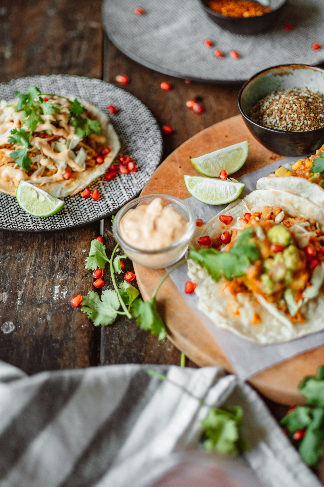

Tacos:
Tacos, oh glorious tacos! These humble bundles of flavor have captured the hearts (and taste buds) of millions around the world. Whether it's the classic street-style tacos or the gourmet creations from upscale restaurants, there's no denying the universal appeal of these handheld delights. Picture it: a warm tortilla cradling succulent grilled meats, topped with vibrant salsas, crisp lettuce, and tangy cheese. Every bite is a harmonious explosion of textures and tastes, a symphony of savory, spicy, and refreshing flavors. From the tender carne asada to the zesty fish tacos, there's a taco for every palate. Whether enjoyed with friends at a vibrant taqueria or savored as a quick and satisfying meal on the go, tacos are a culinary treasure that will forever hold a special place in our hearts (and stomachs). ¡Viva los tacos!
Ingredients
- Ground beef or ground turkey, chicken, or pork/li>
- Taco seasoning
- Tortillas sausage, onions
- Toppings: cheese, lettuce, tomatoes,
- onions, cilantro, salsa, guacamole,
- additional seasonings or spices to enhance the flavor of the protein